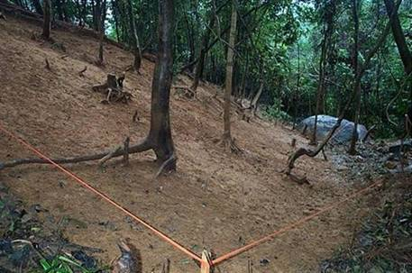

Team Striker
30 June 1967Team Striker
Team Striker

Recon Team Striker
Alpha Company 3rd Reconnaissance Battalion
United States Marine Corps
&
Search and Recovery Report
Today Jeff Savelkoul and Mariano “Junior" Guy, who are the only surviving members of this patrol, march on as proud Marines. Team Striker is still carrying out it's mission by bringing together the families of their Fallen Brothers.
| 30 Jun 1967 | Cpl. | Allen | Merlin | R. | Bayfield | WI | 22E | 86 |
| 30 Jun 1967 | HM. | Judd | Michael | B. | Cleveland | OH | 22E | 88 |
| 30 Jun 1967 | LCpl. | Killen, III | John | D. | Des Moines | IA | 22E | 88 |
| 30 Jun 1967 | Cpl. | Runnels Jr. | Glyn | L. | Birmingham | AL | 22E | 88 |
| 30 Jun 1967 | Capt. | House | John | A. | Pelham | NY | 22E | 87 |
| 02 Jul 1967 | LCpl. | Perry | Dennis | M. | Perry | GA | 22E | 112 |
| 12 Aug 1967 | Sgt. | Castaneda | Eugene | Honokaa | HI | 24E | 102 |
Team members Allen, Judd, Killen, Runnels, and the pilot House were Killed In Action/Bodies not recovered on 30 June. Perry died of wounds on 02 July. Castaneda was later Killed In Action 12 August 1967.
The following is taken from the 3rd Reconnaissance Battalion Command Chronologies on file at the Marine Corps Historical Center, Washington, DC. Note: This is the entire Official Record of this event that remains from the war.
During a search of the records at the Historical Center the following statement was found, misfiled and buried in the records.
301630H June
Map: YC997963
During attempted insertion of patrol in the vicinity helo started taking SA, AW, AA fire from the general area. Helo took a hit in the fuel tank causing the helo to crash and burn. Results of this were 4 friendly WIA and 4 friendly KIA's from the recon team. The survivors moved to high ground directed at the gunships and fixed wings as they made strafing runs in the area. The survivors fired pen flares to mark their location and were extracted by sling. Prior to extraction team leader checked area of destroyed helo for weapons and their equipment. All weapons were believed destroyed with the helo. Patrol did observe assorted SA ammo scattered throughout the area. From the amount of flack in the air at the time patrol leader feels there was at least (3) AA weapons in the area.
Castaneda Sgt. Co A
From “Never Without Heroes”:
Narrative from “Never Without Heroes” by Lawrence C. Vetter, Jr. 1996 Ivy Books
“On June 30, the team was again in the air, heading back in the same direction, but this time it was preceded by fixed wing aircraft that bombed and strafed the landing zone area. Members of the team didn\'t understand why jets would strafe the LZ and announce their coining, but theirs was "not to reason why."
As soon as the jets were finished with their runs, the lumbering 46 flew down toward the landing zone. Junior [Mariano Guy] was positioning himself to be the first out and saw the tall elephant grass in the valley floor fast approaching. [Jeff] Savelkoul was back farther in the patrol, adjusting the extra weight of the radio on his pack.
When the chopper was within a few feet of the ground and Junior was about to leap and run, he was knocked off his feet by a, sudden rocking and shaking of the aircraft. Still inside the chopper, the Marines sensed their first nervous fear; they knew that their helicopter had dropped into an ambush and was being battered by heavy weapons. Enemy fire penetrated the metal skin and ripped past the Marines inside.
As the helicopter lurched and shuddered, the pilot fought for control and tried to pull the aircraft out of the kill zone.
Savelkoul said:
“I was toward the rear end, and I felt the chopper try to rise and turn around. As we went up higher, we were knocking out the portholes and firing our weapons or dropping grenades through them, trying to aim where we thought the VC were. The chopper was taking a lot of hits. Then I saw the round that took us down. I saw it fire from the ground and like a tracer streak toward us. It exploded a ten inch hole through the side of the aircraft right next to me, and it caused a loud cracking noise. It exited through the roof and shattered a fuel line. But it was like the fuel pump was still surging and spraying its fuel through the broken line out onto us. The fuel ignited, and we were in the middle of this firestorm, and there wasn't anywhere to hide from it.”
Junior stated that he and "Cass," [Cpl Eugene Castaneda] the patrol leader, had run to the front and were firing out of the window next to the gunner. He said,"I heard guys in the chopper screaming. The fire was burning up the place, and Marines were on fire."
Even though 46s had survived severe damage in other battles, this old sky tank had been hit by an antitank round and it was starting to break up. The chopper was fatally wounded but straggled upward about two hundred feet. Stuck in the rear, Jeff Savelkoul was being enveloped by fire and smoke and was gasping for air. Savelkoul stated:
“I needed to get air and stuck my head out of one of the broken windows. I got the air, but a piece of burning plexiglas stabbed into my face. Then I heard somebody yelling, "Get up to the front; we're going down!"
I had to run through that wall of fire. I remember throwing off my pack because it was on fire. All my clothes were burned off except for one boot and my cartridge belt. In the confusion, I didn't realize that my hat was on fire, but when I finally knocked it off, my head was badly burned. My backside was particularly burned from my heels to my head. It was chaos. We were taking enemy fire through the chopper as well, and there was just nowhere to hide. I remember seeing a pile of bodies on the floor and Cass and Junior to one side.”
The pilot, Capt. John A. House II, was struggling with the craft, trying to reach the top of a hogback ridge very close by, and away from the VC. But it couldn't be. The surviving Marines saw daylight through the roof of the chopper, and then the back section of the helicopter cracked completely off and fell away from the front. The front section of the aircraft crashed into the top level of ninety-foot-tall trees. Captain House had made it about three fourths of the way to the top of the ridge and had given the team's survivors some breathing room. But he was dead and his copilot wounded.
Junior said, "We hit those ninety-foot trees and really went into an uncontrolled crash, falling through the trees. We were frantic to get out of there and started pushing out through the windows on the right side."
Savelkoul, Junior Guy, Castaneda, and [Dennis] Perry leaped into the air out of the falling, burning wreck, but they were still high up in the trees. Each plummeted, being battered, spun around, and flipped by branches. They hit the ground hard. Savelkoul said he remembered seeing Junior stumbling around dazed for a moment, trying to get his bearings. "The helicopter smashed into the ground nearby and looked like a watermelon that you had dropped on the sidewalk. It just splattered on the jungle floor."
The wounded Marines found themselves on a jungle hillside. Junior and Castaneda were in the best shape, and they tried to help Savelkoul and Perry up the hill. Savelkoul and Perry were burned badly, raw and charred flesh hanging off them. Finally the two healthy Reconners struggled to the hilltop with Savelkoul and Perry, then started back down the hill to see if they could find more survivors. Of course, the VC were coming up, firing at the rescue helicopters that hovered and buzzed over the tall jungle canopy, trying to catch sight of any survivors.
Savelkoul explained:
Junior and Cass pulled Perry and me away and started us up the hill, and then they ran back down. Perry was in really critical condition. I was trying to pull him and hand-over-hand pull us up the steep slope. It hurt! The skin on my hands was pretty much burned off, my ears and hair were also burned off, and all down my back and legs my body just screamed.
You could hear the VC down below us shooting, and you could hear our choppers over the tops of the trees. I guess the desire to live keeps you going.
Junior Guy continued:
Cass got to the cockpit and crawled through the burning wreck to rescue the pilot. But he was slumped over, strapped in and covered by the fire. It was no use, but we managed to help the copilot, who was wounded and banged up, away from the burning wreck. Everything else was just obliterated. Everybody was dead.
We got back up to Jeff and Perry with the copilot, but wanted to go back down and try to find some weapons. Our rifles had melted, but maybe there was something to fight with. The VC were making their way uphill through the jungle toward us, and we were having to rush. We had one .38 pistol from the copilot and one grenade. Cass took the .38.
Before he and Castaneda went back down the hill to the wreckage, Junior took the one grenade, put it into Savelkoul's hand, and pulled the pin. He told Savelkoul not to dare let it go, but to use it in a final fight against the VC if they got up to them.
Savelkoul explained his feelings at that moment: "My hand was burned raw. The nerve endings must've been exposed. When Junior wrapped my fingers around that grenade and pulled the pin, the pain was fierce. Perry was lying in my lap. I watched Junior and Cass running from tree to tree, trying to get back to the wreck without running into any VC."
They made it down, but there were no more weapons to be found, and time was running out. They climbed back up, but had no radio on which to call for help. Then Cass found pen flares on the copilot and started firing them through the canopy overhead trying to signal the rescue birds above. By a stroke of fortune be was able to hit one of the
ships on the' windshield. It was a Huey slick, which did a dip nose¬ down signal to let the Marines 'on the ground' know that he had received their message. The crew immediately lowered a sling toward the Marines. The enemy could still be heard and they were closer.
The race for survival was not going to be easy; there was just no way that the ropes could descend through trees, without getting hung up. Junior Guy still had his machete, so the young native of El Paso climbed the problem tree, hacking away at branches faster than the VC could climb the hill. He cleared a path for the slings; then slid back down. With the enemy closing and firing at the helicopters, trying to beat them to the team, the Reconners started their ascent. The copilot, Perry, and Savelkoul, were each tied in tightly and went up, one at a time. They, were followed by Junior Guy and Cass two in one loop. The last two stayed together, each not wanting the other to be the last on the ground.
“The sling was just a loop in a rope; and you had to tighten it so you wouldn't slip out,” said Savelkoul. "That line dug, deep into me. At the time, I couldn't see my back, but that rope made me feel how badly burned it. was. It really hurt, but I held on as tight as I could”
By the time the VC clambered up to the crash site; the Marines were all safely aboard the Huey, and the birds swiftly turned and sped back to Phu Bai with the injured.
Back at the camp, during the time of the battle, Acosta, Junior's brother, was being kept away from emergency radio transmissions by well meaning friends who knew that Junior was in deep trouble: But once the team had been pulled our and Junior was known to be among the survivors, Acosta was told, and he got over to the medical company as quickly as he could. Doc Zink was also there to receive his friends. He learned that his replacement, Doc Judd, had been killed, and it was an emotional experience for him. Perry, badly hurt, was carried in on a stretcher. He died two days later in a hospital in Japan. Jeff Savelkoul had burns over two thirds of his body, mostly third degree. He hurt so much that he couldn't lie on a stretcher, so, naked, he walked away from the bird.
Savelkoul said, "The last thing I remember in Vietnam was talking to Doc Zink and asking him to take care of me. He gave me a glass, of water and promised that he would. After that there was only a couple of vague moments that I remember before, two weeks later, I woke up in the burn unit of Brooks Army Medical Center in San Antonio, Texas."
Neither Eugene Castaneda nor Mariano "Junior" Guy was so severely inured that he had to be hospitalized. And although Junior was at first scheduled to go back to the bush in three days, the battalion decided to transfer him to Okinawa for the rest of his overseas tour. Corporal Castaneda was also transferred, but to another in-country unit working with the Vietnamese. On August 12, 1967, he was killed while on duty.”
Search and Recovery, a CH-46A Crash Site Associated with REFNO 0746
Phu Loc District, Thua Thien-Hue Province, Socialist Republic of Vietnam
Search and Recovery Report 12-30 January 2002
Search and Recovery Report 6-22 June 2002
This Web Site is maintained by the Alpha Recon Association, a combat Viet-Nam Veterans group that served in Alpha Company 3rd Reconnaissance Battalion, USMC 1965-69. Any comments should be directed to the webmaster.
Search and Recovery Report 12-30 January 2002
Interim Search and Recovery Report 2002/CIL/005, a CH-46A Crash Site Associated with REFNO 0746, Phu Loc District, Thua Thien-Hue Province, Socialist Republic of Vietnam, 12 Through 30 January 2002

by
James Pokines, PhD
U.S. Army Central Identification Laboratory
Hickam AFB, HI 96853-5530
25 February 2002
TABLE OF CONTENTS
| INTRODUCTION | 1 |
| BACKGROUND | 1 |
| RECOVERY SCENE LOCATION | 2 |
| DESCRIPTION OF RECOVERY SCENE | 4 |
| FIELD METHODS | 6 |
| ARCHAEOLOGICAL FINDINGS | 9 |
| CONCLUSIONS AND RECOMMENDATIONS | 11 |
| REFERENCE | 11 |
LIST OF FIGURES
| Figure 1. | Example of a CH-46 Sea Knight helicopter. | 2 |
| Figure 2. | General location of the REFNO 0746 project area in Thua Thien-Hue Province. | 3 |
| Figure 3. | Topographic map of REFNO 0746 project area. | 4 |
| Figure 4. | REFNO 0746 schematic soil profile. | 5 |
| Figure 5. | Soil profile at N550 E500, north face. | 5 |
| Figure 6. | REFNO 0746 overview diagram. | 7 |
| Figure 7. | Diagram of REFNO 0746 excavation area. | 8 |
| Figure 8. | Excavation of REFNO 0746. | 9 |
| Figure 9. | East side of excavation area, bordering stream bed. | 10 |
| Figure 10. | West side of excavation area. | 10 |
| Figure 11. | Center of excavation area. | 11 |
Interim Search and Recovery Report 2002/CIL/005, a CH-46A Crash Site Associated with REFNO 0746, Phu Loc District, Thua Thien-Hue Province, Socialist Republic of Vietnam, 12 Through 30 January 2002
U.S. ARMY CENTRAL IDENTIFICATION LABORATORY, HAWAII
25 February 2002
INTRODUCTION
From 12 through 30 January 2002, during the 68th JFA, Recovery Element Four (RE4) excavated a crash site associated with Case 0746 in Phu Loc District, Thua Thien-Hue Province, Socialist Republic of Vietnam (SRV). RE4 excavated approximately 388 m2. The Investigator in Charge (IC) suspended excavation of the site on 30 January 2002. RE4 did not recover or receive any remains, personal effects or significant material evidence. This project area is recommended for further excavation (approximately one full JFA for completion).
BACKGROUND
This case involves the 30 June 1967 loss of a CH-46A helicopter (see Figure 1 for an example) while conducting an insertion mission, resulting in five unaccounted-for individuals.
On 15 May 2000, Investigation Element One (IE1) conducted split operations and investigated case 0746 in Phu Loc District, Thua Thien-Hue Province. IE1 interviewed one witness who had knowledge of a helicopter crash site. The witness guided IE1 to a crash site where the joint team found personal effects, and several pieces of both aircrew and troop-related items. IE1 recovered material evidence that conclusively correlated the crash site with case 0746. IE1 did not recover or receive any remains, but did recover and receive several personal effects and both aircrew and troop related items while investigating Case 0746. IE1 recommended additional investigation. J2/J3/CILHI analysts subsequently recommended the site for excavation.
RE4 re-interviewed the same witness:
(1) Name: XXXXXXXXXXXXXXX
(2) Age: XX yoa.
(3) Current residence and length of time there: Lifelong resident of XXXXXXXXXXXXXXXXXXXXXXXXXXXXXXXXXXXX
(4) Current occupation: Farmer.
(5) Occupation during time of incident: Farmer.
(6) Reliability: Reliable. The location of the crash area was reconfirmed by previous investigation during the 60th JFA and partial excavation during the present JFA.
(7) Statement: Mr XXXXXXX provided RE4 the same information as he provided the IE during the 60th JFA, showing the team to the same location. He further indicated that to his best recollection, the local forest had been logged in approximately 1978. He also led RE4 to a location approximately 300 m west of the crash area, which he claimed had additional wreckage from it washed there by storm erosion. This location was reached by climbing approximately 150 m up the waterfall adjacent to the base camp. Life Support Analyst (LSA)/Explosive Ordnance Disposal (EOD) Technician analysis indicated that the few pieces of wreckage remaining were from a UH-1 helicopter. The erosional scenario described by the witness was also impossible, due to the shape of the terrain. This wreckage is therefore unrelated to the CH-46A site area.
RECOVERY SCENE LOCATION
The REFNO 0746 project area is in central SRV, approximately 45 km from the city of Hue (Figure 2). This site is located in the vicinity of Lang La Khe Village, Phu Loc District, Thua Thien-Hue Province (Figure 3). The team gained initial access to the site by a drive of approximately 20 minutes from the Huong Giang Hotel in Hue to Phu Bai Airport south of the city. The team then flew to the site via a 10-minute helicopter ride to a landing zone (LZ) approximately 150 m downhill from the site. The team later gained access from a base camp located adjacent to the LZ area. The nearest habitations are approximately 4 km from the site.
The grid coordinates are: 48Q ZC 00822 99956, determined by Garmin III Global Positioning System (GPS) receiver, tracking seven satellites. This site is located on map: Name: Q. Phu Loc; Sheet: 6541 I; Series: L7014; Edition: 2-TPC; Scale: 1:50,000; Datum: Indian Datum 1960.
Map: Name: Q. Phu Loc; Sheet: 6541 I; Series: L7014; Edition: 2-TPC; Scale: 1:50,000; Datum: Indian Datum 1960.
Figure 3. Topographic map of REFNO 0746 project area.
DESCRIPTION OFRECOVERY SCENE
The project area is on the side of a low hill (ca. 320 m above mean sea level) with an approximately 300 slope. Downhill exposure is to the north, looking over the coastal plain in the direction of Hue. The surrounding upland area is protected forest reserve, with rice paddies in the valley bottoms. The hillside is well-drained, but has undergone extreme erosion of its topsoil in recent years.
The soil in the site area (Figures 4 and 5) consists of a thin, brown silty A horizon, grading immediately into an orange C horizon primarily composed of sand, silt, and decayed bedrock. Bedrock is exposed in and around the site, and is composed of bands of sandstone high in iron content and siltstone. Root disturbances are common from the trees throughout the site, as are

Figure 4. REFNO 0746 schematic soil profile.

Figure 5.Soil profile at N510 E500, north face.
small mammal burrows. Multiple areas of exposed subsoil (from erosion and other agencies) are apparent in the site area.
The site area drapes over a spur of the hill (Figures 6 and 7), with slopes dropping on three sides (west, south and east) from the central site area. The eastern side of the site terminates at the base of a dry streambed lined with large sandstone boulders. Previous investigation during the 60th JFA indicated that the site stretches approximately 50 m east-west and north-south.
Multiple factors have impacted the site area between the time of the loss incident and this excavation. Multiple small entrenchments are located due south, uphill from the crash area. These may be the remains of wartime tunnel entrances, indicating occupation near the crash site at that time. RE4 recovered multiple indications of significant ordnance expenditure in the site area, further indicating its possible occupation by enemy forces. Significant scavenging of site materials therefore could have begun as early as during the war. According to the witness statement (above) and as confirmed by visual inspection, the site surroundings were logged out in the late 1970s. This would have exposed the crash site and allowed wholesale movement of materials from the area. The witness indicates that most of the helicopter was already gone upon his initial discovery and salvage activities in 1985. The site has also undergone scavenging between the activities of this mission and the previous investigation during the 60th JFA. Upon arrival at the site, RE4 discovered that a game-trapping trail already transected the site area.
FIELD METHODS
The excavation team followed standard archaeological procedures. This site placement was determined from the witness statement and through metal detector prospecting of the site area by the EOD Technician, though the latter efforts were restricted by the high iron content of the bedrock. The IC determined the probable original impact/burning area through the location of melted fragments of Plexiglas-like material, which apparently had not been disturbed by scavenging efforts. Only two metal artifacts of any type were visible on the surface after clearing efforts, with sporadic pieces of possible aircraft wreckage (corroding aluminum, brass, etc.) located through metal detector sweeps. The IC selected areal exposure using multiple 5-x-5-m units as the excavation strategy. The IC aligned the excavation grid at 3390 (210 west of magnetic north). These units were excavated (Figure 8) using shovels, picks, and trowels, starting at eastern edge of the site area. Culturally sterile soil was reached at a normal maximum depth of 0.30 m below the original ground surface. The team passed all sediments through 1/4-in wire mesh, with US personnel examining the contents of each screen. The final excavations covered approximately 388 m2.
The IC, EOD Technician and LSA analyzed all artifacts recovered from the site (see Archaeological Findings section, below). The team photographed the site before, during and at the close of excavations.
Figure 7.Diagram of REFNO 0746 excavation area.
Figure 8.Excavation of REFNO 0746.
ARCHAEOLOGICAL FINDINGS
The partial excavation of this site yielded few finds of any kind. Scattered shrapnel was recovered throughout the excavation area (Figures 9, 10 and 11) as well as other fragments of expended ordnance. A few pieces of aircraft wreckage were recovered, scattered throughout the excavation area, with the largest/densest of these concentrated on the downhill margins of the site area (trapped against natural rock barriers). Additional finds of melted Plexiglas-like material were concentrated in the central crash area. Other items were found through metal detector sweeps outside of the excavated area and include scattered pieces of aluminum and some items of ordnance (below). These items were disposed of near the site.
The items of explosive ordnance recovered in and around the site consisted of: (1) shrapnel from 105 mm M-1 howitzer rounds; (2) multiple fragments of 81 mm mortar rounds; (3) multiple fragments of 2.75 in HE rockets; (4) multiple fragments of RPG2 rounds; (5) multiple small caliber projectiles, possible non-US origin; (6) one 7.62-x-51 mm small arms round; (7) multiple M-16 rounds; and (8) two small components of an M-16 rifle. These were disposed of near the site.

Figure 9. East side of excavation area, bordering stream bed (view is northwest).

Figure 10.West side of excavation area (view is east).

Figure 11.Center of excavation area (view is northeast).
CONCLUSIONS AND RECOMMENDATIONS
RE4 excavated the eastern side and part of the central portion of the established site area to the fullest possible extent within the time available during this JFA. The IC suspended operations on 30 January 2002. Only minor traces of debris consistent with the aircraft type in question were recovered in the excavated area and in adjacent areas swept by metal detector. The IC recommends additional excavation of this site, with an estimation of a full JFA being necessary for completion. No wet screening will be necessary.
JAMES POKINES, PhD
Investigator in Charge/Anthropologist
REFERENCE
Ripley, T.
1998 Jane’s Pocket Guide: Modern Military Helicopters. Harper Collins Publishers, London.
Search and Recovery Report 6-22 June 2002
Search and Recovery Report 2002/CIL/043, a CH-46A Crash Site Associated with REFNO 0746, Phu Loc District, Thua Thien-Hue Province, Socialist Republic of Vietnam, 6 Through 22 June 2002

Paul D. Emanovsky, MS
U.S. Army Central Identification Laboratory
Hickam AFB, HI 96853-5530
27 June 2002
U.S. ARMY CENTRAL IDENTIFICATION LABORATORY, HAWAII
27 June 2002
INTRODUCTION
From 6 through 22 June 2002, during the 70th Joint Field Activity (JFA), Recovery Element Four (RE4) excavated a crash site associated with REFNO 0746 in Phu Loc District, Thua Thien-Hue Province, Socialist Republic of Vietnam (SRV). RE4 excavated approximately 525 square metersof sediment to an average depth of 0.25 m below ground surface. The Investigator in Charge (IC) closed the site on 22 June 2002. RE4 did not recover or receive any remains, personal effects or significant material evidence.
BACKGROUND
This case involves the 30 June 1967 loss of a CH-46A helicopter (see Figure 1 for an example) while conducting an insertion mission, resulting in five unaccounted-for individuals. Seven individuals survived the incident and reported that after the aircraft crashed it caught fire with the remaining five crewmembers inside.
On 15 May 2000, Investigation Element One (IE1) investigated REFNO 0746 in Phu Loc District, Thua Thien-Hue Province. IE1 interviewed one witness who had knowledge of a helicopter crash site. The witness guided IE1 to a crash site where the joint team recovered material evidence that conclusively correlated the crash site with REFNO 0746. IE1 did not recover or receive any remains, but did recover several personal effects and both aircrew and troop related items from the surface at the crash site. IE1 recommended additional investigation. J2/J3/CILHI analysts subsequently recommended the site for excavation.
From 12 through 30 January 2002, during the 68th JFA, Recovery Element Four (RE4) excavated approximately 388 square metersat the crash site associated with REFNO 0746. In addition to excavation, RE4 re-interviewed the witness IE1 contacted during the 60th JFA. The witness confirmed the information he provided the IE, showing the team to the same location and further indicated that the local forest had been logged in approximately 1978. RE4 left the site open and did not recover or receive any remains, personal effects or significant material evidence.
RECOVERY SCENE LOCATION
The REFNO 0746 project area is in central SRV, approximately 45 km from the city of Hue (Figure 2). This site is located in the vicinity of Lang La Khe Village, Phu Loc District, Thua Thien-Hue Province (Figure 3). The team gained initial access to the site by a drive of approximately 15 minutes from the Saigon Morin Hotel in Hue to Phu Bai Airport south of the city. The team then flew to the site via a 10-minute helicopter ride to a landing zone (LZ) approximately 150 meters downhill from the site. The team later gained access from a base camp located adjacent to the LZ area. The nearest habitations are approximately 4 km from the site.
The grid coordinates of the site are 48Q ZC 08839 99942, determined by a Garmin III Global Positioning System (GPS) receiver, tracking five satellites using the Indian Thailand Datum. This site is located on map: Name: Q. Phu Loc; Sheet: 6541 I; Series: L7014; Edition: 2-
Map: Name: Q. Phu Loc; Sheet: 6541 I; Series: L7014; Edition: 2-TPC; Scale: 1:50,000; Datum: Indian Datum 1960.


Figure 3. Topographic map of REFNO 0746 project area.
DESCRIPTION OFRECOVERY SCENE
The project area is on the side of a low hill (ca. 320 m above mean sea level) with an approximately 30° slope. Downhill exposure is to the north, looking over the coastal plain in the direction of Hue. The surrounding upland area is protected forest reserve, with rice paddies in the valley bottoms. The hillside is well-drained, but has undergone extreme erosion of its topsoil in recent years.
The soil in the site area (Figures 4 and 5) consists of a thin, brown, silty A horizon, grading immediately into an orange C horizon primarily composed of sand, silt, and decayed bedrock. Bedrock is exposed in and around the site, and is composed of bands of sandstone high in iron content and siltstone. Root disturbances are common from the trees throughout the site, as are small mammal burrows. Multiple areas of exposed subsoil (from erosion and other agents) are apparent in the site area.
The site area drapes over a spur of a hill , with slopes dropping on three sides (west, north, and east) from the central site area. The eastern side of the site terminates at the base of a dry streambed lined with large sandstone boulders.
Multiple factors have affected the site between the time of the loss incident and this excavation. Several small entrenchments are located due south, uphill from the crash area. These may be the remains of wartime tunnel entrances, indicating occupation near the crash site at that time. The 68th JFA recovery element and the current team recovered multiple indications of ordnance expenditure in the project area, further suggesting that the project area was occupied by enemy forces. Significant scavenging of site materials therefore could have begun as early as during the war. According to the witness statements obtained during the 60th and 68th JFAs, and as confirmed by visual inspection, the site surroundings were logged out in the late 1970s. This would have exposed the crash site and allowed wholesale movement of materials from the area. The witness indicated that most of the helicopter was already gone upon his initial discovery and salvage activities in 1985 (Pokines 2002). The site has also undergone scavenging between the activities of the 68th JFA and the previous investigation during the 60th JFA. During the 68th JFA RE4 discovered that a game-trapping trail transected the site area. This trail was still visible during the 70th JFA.
FIELD METHODS
The excavation team followed standard archaeological procedures. The 68th JFA team determined the recovery scene perimeter through witness testimony and metal detector prospecting. Witness testimony and excavation findings, including melted fragments of probable cockpit Plexiglas material, identified the likely aircraft impact point. The 68th JFA team excavated contiguous 5-x-5-meter units. The current team adopted the same recovery-scene perimeter and employed the same excavation strategy; 5-x-5-meter units were set up using tape measures along the ground surface from the original datum to the west and south of the previously excavated area. The IC aligned the excavation grid at 339° (21° west of magnetic north). These units were excavated using shovels, picks, and trowels, starting at the eastern edge of the site area and continuing westward. Incident sterile soil was reached at a normal maximum depth of 0.25 m below the original ground surface. The team passed all sediments through ¼-inch wire mesh, with US personnel examining the contents of each screen. RE4 excavated approximately 525 square meters during the 70th JFA. The final area excavated during the 68th and 70th JFAs covered approximately 913 square meters.
The IC, Explosive Ordnance Disposal Technician and Life Support Analyst examined all artifacts recovered from the site (see Archaeological Findings section, below). The team photographer produced a photographic record using 35 mm negative film and digital photography before, during, and after excavation.
ARCHAEOLOGICAL FINDINGS
RE4 did not recover or receive any remains, life support materials, personal effects, or significant material evidence. Excavation of the REFNO 0746 crash site yielded few finds of any kind. Scattered shrapnel was recovered throughout the excavation area (Figures 9, 10, 11 and 12) as well as other fragments of expended ordnance. A few pieces of aircraft wreckage were recovered, scattered throughout the excavation area, with the largest and densest of these concentrated on the downhill margins of the site area (trapped against natural rock barriers). Melted Plexiglas-like material was also found during the 68th JFA in the probable aircraft impact area.
Items of explosive ordnance recovered during the 68th JFA in and around the site consisted of: (1) shrapnel from 105 mm M-1 howitzer rounds; (2) multiple fragments of 81 mm mortar rounds; (3) multiple fragments of 2.75 in HE rockets; (4) multiple fragments of RPG2 rounds; (5) multiple small caliber projectiles, possible non-US origin; (6) one 7.62-x-51 mm small arms round; (7) multiple M-16 rounds; and (8) two small components of an M-16 rifle. Additionally during the 70th JFA, RE4 recovered: (1) one .38 caliber casing; (2) two 7.62 mm tracer rounds; and (3) two 7.62 mm casings.
CONCLUSIONS AND RECOMMENDATIONS
During the 68th JFA RE4 excavated the eastern side and part of the central portion of the crash site associated with REFNO 0746. During the 70th JFA RE4 completed excavation of the western and central portions of the site. No remains were recovered from this site by the investigative or excavation teams. The IC suspended operations and closed the site on 22 June 2002. Only minor traces of debris consistent with the aircraft type in question were recovered through excavation. Current evidence, including investigation and excavation findings, and REFNO 0746 survivor statements, suggest the five unaccounted-for individuals may have been removed from the aircraft by unknown persons shortly after impact.
PAUL D. EMANOVSKY, MS
Investigator in Charge/Anthropologist
REFERENCES
Ripley, T.
1998 Jane’s Pocket Guide: Modern Military Helicopters. Harper Collins Publishers, London.
Pokines, J.
2002 Interim Search and Recovery Report 2002/CIL/005, a CH-46A Crash Site Associated with REFNO 0746, Phu Loc District, Thua Thien-Hue Province, Socialist Republic of Vietnam, 12 Through 30 January 2002. Report on file at USACILHI, Hickam AFB, HI.
Team Striker Excavation Photographs
From an earlier version of the association's website, saved 16 July 2006. This part on its own page
These photo’s are from the 15 May 2000 investigation that located the “Striker” site and the discovery of numerous personal and aircraft parts by Investigation Element One (E1) of the JFA. The Rosary Beads and Watch belonged to Jeffrey Savelkoul.


The following photo’s are from the excavation effort during the 68th and 70 JFA’s.




Update on Return of Team Striker

Recon Team Striker
Alpha Company 3rd Reconnaissance Battalion
United States Marine Corps
Lost Date 30 June 1967
Update 22 October 2018


The Final Members of “Team Striker’ have returned home.
27 September 2018
Interred 27 September 2018
| LCpl. | Killen, III | John | D. | Des Moines | IA | 22E | 88 |
| Cpl. | Runnels Jr. | Glyn | L. | Birmingham | AL | 22E | 88 |
| Capt. | House | John | A. | Pelham | NY | 22E | 87 |
Recon Team Striker
| 30 Jun 1967 | Cpl. | Allen | Merlin | R. | Bayfield | WI | 22E | 86 |
| 30 Jun 1967 | HM. | Judd | Michael | B. | Cleveland | OH | 22E | 88 |
| 30 Jun 1967 | LCpl. | Killen, III | John | D. | Des Moines | IA | 22E | 88 |
| 30 Jun 1967 | Cpl. | Runnels Jr. | Glyn | L. | Birmingham | AL | 22E | 88 |
| 30 Jun 1967 | Capt. | House | John | A. | Pelham | NY | 22E | 87 |
| 02 Jul 1967 | LCpl. | Perry | Dennis | M. | Perry | GA | 22E | 112 |
| 12 Aug 1967 | Sgt. | Castaneda | Eugene | Honokaa | HI | 24E | 102 |
Team Members Allen, Judd, Killen, Runnels were all Missing in Action until located and returned home previously by the Department of Defense.
Historical Record of the patrol mission: https://alphareconassociation.org/striker.htm
Department of Defense Press Release
The Defense POW/MIA Accounting Agency (DPAA) announced that the remains of three U.S. servicemen, accounted for from the Vietnam War, are being returned to their families for burial with full military honors.
They are Capt. John A. House, II, 28, of Pelham, New York; Lance Cpl. John D. Killen, III, 18, of Davenport, Iowa; and Cpl. Glyn L. Runnels, Jr., 21, of Birmingham, Alabama, all U.S. Marine Corps. These men, accounted for on Dec. 22, 2015, will be buried as a group Sept. 27, 2018 in Arlington National Cemetery, near Washington, D.C.
Partial remains of two other servicemen who were lost in this incident and were individually identified in 2013, are also represented in this group. They are Marine Lance Cpl. Merlin R. Allen, 20, of Madison, Wisconsin, and Navy Hospital Corpsman Michael B. Judd, 21, of Cleveland, Ohio.
On June 30, 1967, House was the pilot of a CH-46A Sea Knight helicopter, who with three other crew members, was attempting to insert eight members of Company A, 3rd Reconnaissance Battalion, 3rd Marine Division, into hostile territory in Thua Thien-Hue Province, Vietnam. As the helicopter approached the landing zone, it was struck by enemy fire from the surrounding tree line, causing the aircraft to catch fire and crash. Although three crew members and four of the reconnaissance patrol passengers survived and were later rescued, House, Killen, Runnels, Allen, and Judd died in the crash.
In 1993, a joint U.S./Socialist Republic of Vietnam (S.R.V.) team investigated the case in Thua Thein-Hue Province. The team interviewed local villagers who claimed to have discovered an aircraft crash site in 1991 in the nearby forest while searching for wood. The team surveyed the location, finding helicopter-related wreckage with no distinguishing markings.
In 2012, joint U.S./S.R.V. recovery teams excavated the crash site and recovered human remains, material evidence, life support equipment, and aircraft wreckage from the CH-46A helicopter. Additional recovery efforts in 2013 and 2014 failed to yield any additional human remains. Vietnam’s support to the U.S. accounting mission was vital to the recovery of these individuals.
DPAA and the Armed Forces Medical Examiner System used mitochondrial DNA (mtDNA) analysis, dental analysis, anthropological analysis, as well as circumstantial and material evidence to identify House, Killen and Runnels individually.
DPAA is grateful to the government and people of Vietnam for their partnership in this mission.
Today, there are 1,594 American servicemen and civilians still unaccounted for from the Vietnam War. House’s, Killen’s and Runnels’ names are recorded on the National Vietnam Veterans Memorial in Washington, DC, and the Courts of the Missing at the National Memorial Cemetery of the Pacific in Honolulu, along with others who are unaccounted-for from the Vietnam War. A rosette will be placed next to their names to indicate they have been accounted for.
For additional information on the Defense Department’s mission to account for Americans who went missing while serving our country, visit the DPAA website at www.dpaa.mil, find us on social media at www.facebook.com/dodpaa or call (703) 699-1420/1169.
House’s personnel profile can be viewed at https://dpaa.secure.force.com/dpaaProfile?id=a0Jt000000oW625EAC
Killen’s personnel profile can be viewed at
https://dpaa.secure.force.com/dpaaProfile?id=a0Jt000000oW62FEAS
Runnels’ personnel profile can be viewed at
https://dpaa.secure.force.com/dpaaProfile?id=a0Jt000000oW62jEAC


John D. Killen, III
In Memory
Team Striker
"HIS DUTY"
FIGHTING FOR OUR COUNTRY
IS A RIGHT THEY SAY
MANY PEOPLE AGREE
BUT THERE IS ALWAYS A PRICE TO PAY
WHETHER IT BE LIFE, LIMB OR MINDS
FIGHTING FOR OUR COUNTRY
IS A LOSS OF ALL KINDS
I SOMETIMES THINK
WE ARE NO BETTER THAN THEM
WHEN WE RAISE OUR LITTLE BOYS
TO FIGHT LIKE BIG MEN
I KNOW WE FIGHT TO KEEP
OUR COUNTRY SAFE
BUT A BROTHER LIKE MINE
CAN NEVER BE REPLACED
YOU SEE HE FOUGHT FOR ALL
THE RIGHT REASONS
BECAUSE THAT
IS WHAT HE WAS TAUGHT
BUT I WILL ALWAYS MISS
MY BROTHER "JOHN"
I LOVED HIM A LOT
I LOVE MY COUNTRY
AS YOU CAN SEE
I CONDONED A DEATH
SO YOU AND I CAN BE FREE
Rebecca Killen-Bailey